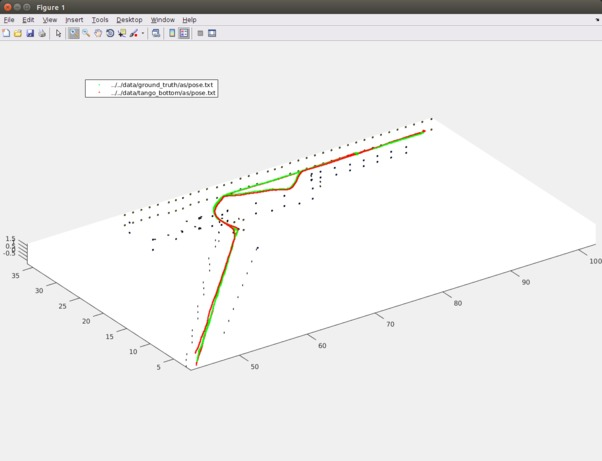

Benchmarking
Compiling and using the benchmarking tools
The benchmarking tool uses the c++ and GSL library. On Ubuntu, the GSL
library can be installed via sudo apt-get install gsl-bin
libgs10-dev, and obviously you need the g++ compiler and make to be
installed. To compile the code:
cd tools/cpp
make
This should produce (among others) the test_trajectory executable,
which you can use to evaluate the error of a trajectory. As an
example, here is how to use the program (test_trajectory -h gives
options to allow scaling etc) to test the output from Tango Bottom’s
proprietary VIO algorithm. You need to download the Tango Bottom data
for that to work.
./test_trajectory -r ../../data/ground_truth/af/pose.txt -t ../../data/tango_bottom/af/pose.txt
read 2885 poses from ../../data/ground_truth/af/pose.txt
read 9596 poses from ../../data/tango_bottom/af/pose.txt
*not* scaling by scale 1.1144
alignment transform:
[ 1 1.24075825e-05 -1.12979008e-05 -0.00269686406
-1.2406981e-05 0.999999999 5.32406084e-05 -0.00113532707
1.12985614e-05 -5.32404682e-05 0.999999999 0.000683608497]
----------------------------
length of reference trajectory: 148.844m
length of test trajectory: 169.189m
----------------------------
--- Average Trajectory Error:
rotational error: 1.2967deg
error in x: 0.715m
error in y: 0.172m
error in z: 1.753m
2d error in x/y plane: 0.908m
3d positional error: 2.497m
--- Relative Position Error:
rotational error: 1.5382deg
error in x: 2.812%
error in y: 1.203%
error in z: 8.864%
2d error in x/y plane: 4.746%
3d positional error: 13.114%
Visualizing results
Matlab scripts to visualize trajectories are provided in the matlab directory. They take files as input that have pose sequences (trajectories) in the standard format used throughout. Here is how to visualize the Tango poses vs the ground truth in Matlab:
>> cd tools/matlab
>> p1 = read_trajectory('../../data/ground_truth/as/pose.txt');
>> p2 = read_trajectory('../../data/tango_bottom/as/pose.txt');
>> view_trajectories({p1,p2}, '../misc/tags.txt');
The result should be a picture like this:
